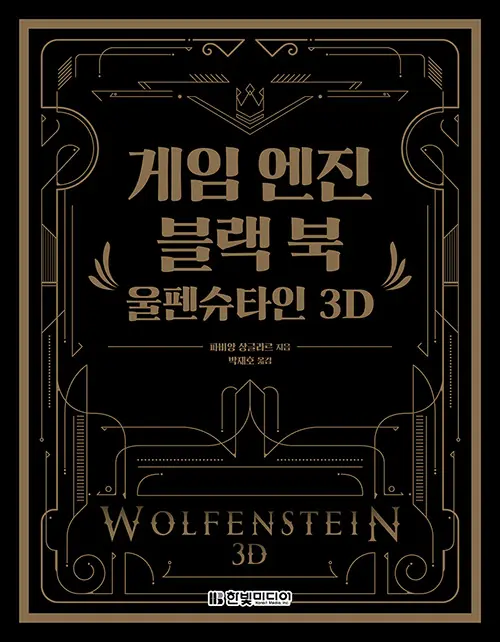

 I am pleased to announce that the 'Game Engine Black Book: Wolfenstein 3D' has been translated to Korean!
It was a surprise to be contacted by Hanbit Media, almost three years after the release of the English version. I had never heard of them and I did not know what to expect.
I remember struggling when I wrote the Wolf3D Black Book. Not because I could not find the words but because I had the greatest difficult in arranging text and drawings in an elegant way.
I like to explain things with visuals so much that I used more than a hundred figures in the book.
At times it felt like no matter what I tried, there were always gaps at the bottom of some pages. I ended up releasing the GEBBWOLF3D with a bunch of these issues, telling myself it was "not too bad" and "to be expected".
When I worked on the DOOM Black Book, my skills had improved. Typesetting was not an after-thought but an integral part of the redaction process. I clearly remember anticipating how drawings would appear several pages in advance. I ended up producing something that to this day I am still proud of.
After I shipped the GEBBDOOM, I picked up the GEBBWOLF3D again, flipped through the pages and felt ashamed. What was once "not too bad" was now unbearable. I painfully fixed the issues but left the exercise with the belief that arranging drawing to achieve visual elegance is just as hard as writing words.
Now imagine the difficulty of translating that thing. You need to explain technical concepts in a different language and make sure everything is kinda where it was in English. You don't have the freedom to change orders, add, or delete anything like the original author did. I won't even get into flow issues where the language is not left->right and top->bottom. That sound like a daunting task that only passion would allow to be done well.
Needless to say I was apprehensive.
I was reassured when I saw the cover of "게임 엔진 블랙 북 : 울펜슈타인 3D". I think its quality puts my minimalist-because-I-cannot-do-better version to shame. It has a Zelda/Prince of Persia French box touch that I love.
It is a book that can be judged by its cover. Much to my relief, Hanbit Media has opted for full color and from the exert I have seen, it looks like they have put the effort into typesetting so that pages feature no blanks. So far I have seen a lot of praise on Twitter[1].
It would almost make me regret to have done it all by myself since the quality they reached is so high. And probably exempt of typos!
Thanks to Jaeho Park for translating the whole thing. I hope they give the DOOM Black Book the treatment soon.
| ^ | [1] | @idgmatrix: I've got the book just today. good translation and print quality is gorgeous. |
{kind=link}